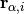

Calculation of Material Properties¶
Calculation of Ideal Crystal Properties¶
Calculation of Energy in DFT
Calculation of Energy in Molecular Dynamics
Structural Minimization¶
Suppose we have an ideal crystal structure with a lattice vectors defined by the matrix and a set of vectors with species .
Additional Reading and References¶
Kitchin’s free source on Modelling Materials using Density Functional Theory is an excellent reference on how to automate DFT calcualtions in VASP.